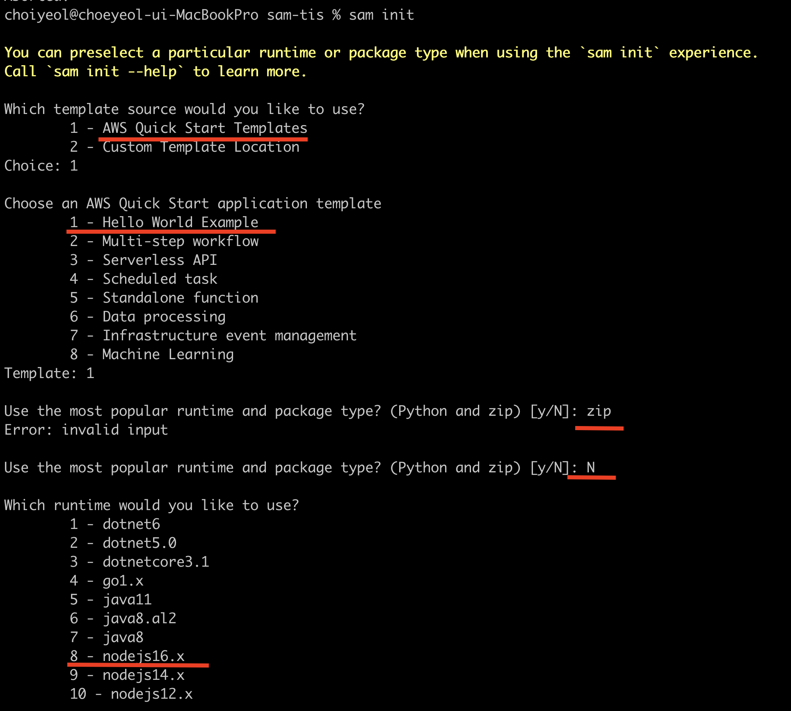
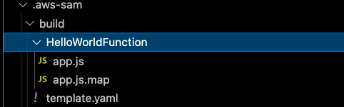
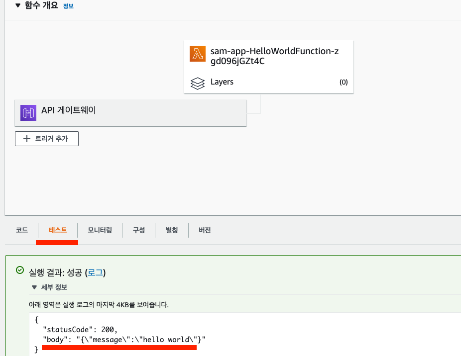
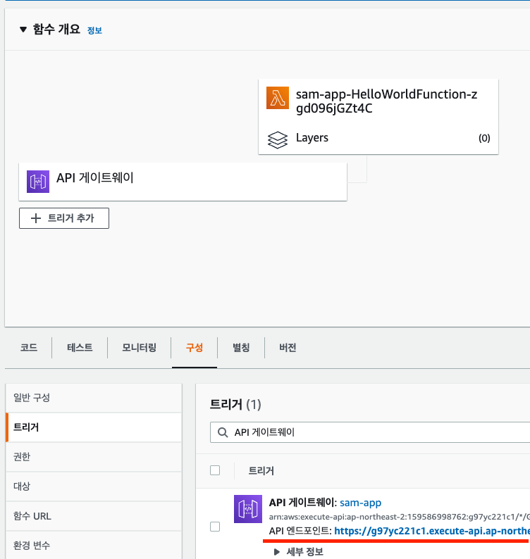

<meta charset="utf-8">
<html lang="ko">
<head>
    <link rel="stylesheet" type="text/css" href="./../style.css" />
    <title>[ AWS ] Lambda 사용하고 sam으로 deploy 하기 - YEOL</title>
</head>
<body id="tt-body-page" class="">
<div id="wrap" class="wrap-right">
    <div id="container">
        <main class="main ">
            <div class="area-main">
                <div class="area-view">
                    <div class="article-header">
                        <div class="inner-article-header">
                            <div class="box-meta">
                                <h2 class="title-article">[ AWS ] Lambda 사용하고 sam으로 deploy 하기 - YEOL</h2>
                                <div class="box-info">
                                    <p class="category">Cloud/aws</p>
                                    <p class="date">2022-07-01 15:49:56</p>
                                </div>
                            </div>
                        </div>
                    </div>
                    <hr>
                    <div class="article-view">
                        <div class="contents_style">
                            <h4 data-ke-size="size20">환경&nbsp;</h4>
<p data-ke-size="size16">AWS Lambda<br />Mac M1<br />Node 16</p>
<h4 data-ke-size="size20">개요</h4>
<p data-ke-size="size16">Lambda 사용하면서 aws에서 직접 수정이 아닌 소스상에서 구현하고 SAM을 통해 deploy 하는 방식을 구현합니다.</p>
<h4 data-ke-size="size20">목차</h4>
<ul style="list-style-type: disc;" data-ke-list-type="disc">
<li>SAM 이란</li>
<li><span>환경설정</span></li>
<li><span>SAM 생성 및 배포</span></li>
<li><span>주요 설정 파일 설명</span></li>
<li><span>Test</span></li>
</ul>
<h2 data-ke-size="size26">&nbsp;</h2>
<h2 data-ke-size="size26"><b>- SAM 이란</b></h2>
<p data-ke-size="size16">약어 Serverless Application Model로 서버리스 애플리케이션(람다)을 빌드하기 위해 사용하는 오픈소스 프레임워크입니다.</p>
<p data-ke-size="size16">sam cli를 통하여 람다의 초기 세팅, 빌드, 배포까지 가능합니다.&nbsp;</p>
<p data-ke-size="size16">&nbsp;</p>
<h2 data-ke-size="size26"><b>- 환경 설정</b></h2>
<p data-ke-size="size16"><a href="https://docs.aws.amazon.com/ko_kr/cli/latest/userguide/getting-started-install.html" target="_blank" rel="noopener"><b>aws-cli와</b></a> <a href="https://docs.aws.amazon.com/ko_kr/serverless-application-model/latest/developerguide/serverless-sam-cli-install.html" target="_blank" rel="noopener"><b>sam-cli를</b></a> 본인 컴퓨터에 설치합니다. 해당 링크를 통해 혹은 검색을 통해서 설치를 완료해주세요.</p>
<p data-ke-size="size16">완료되었다면 test용 directory를 만들어서 terminal에서 sam명령어를 사용해봅시다.</p>
<p data-ke-size="size16">명령어 aws-cli와 sam-cli를 둘 다실 행해하여 잘설치 되었는지 확인합니다.</p>
<p data-ke-size="size16">그리고 aws의 cli를 사용할 때 인증 절차가 있는데 모두 진행합니다.&nbsp;</p>
<p data-ke-size="size16">&nbsp;</p>
<h2 data-ke-size="size26"><b>- SAM 생성 및 배포&nbsp;</b></h2>
<h4 data-ke-size="size20"><b>1. sam init</b></h4>
<p data-ke-size="size16">sam init를 통해 sam 초기 설정을 합니다.</p>
<p data-ke-size="size16">하단 이미지처럼 퀵 템플릿 기준 1번인 Hello World Ex를 선택했습니다. 그아래 질문은 런타임을 선택하라는 질문이고 N이라고</p>
<p data-ke-size="size16">해야 다른 런타임을 설정할 수 있습니다. node를 선택해줍니다. 다른 텍스트를 입력할 경우 아래처럼 error invaild input이 나옵니다.</p>
<p><figure class="imageblock alignCenter" >
    <span data-lightbox="lightbox">
        
    </span>
    <figcaption></figcaption>
</figure></p>
<p data-ke-size="size16">아래 템플릿에서 typescript를 선택했습니다. 1번을 고를 경우 js로 예상됩니다.</p>
<p><figure class="imageblock alignCenter" >
    <span data-lightbox="lightbox">
        
    </span>
    <figcaption></figcaption>
</figure></p>
<p data-ke-size="size16"><span style="font-family: -apple-system, BlinkMacSystemFont, 'Helvetica Neue', 'Apple SD Gothic Neo', Arial, sans-serif; letter-spacing: 0px;">sam 초기 설정은 나머지는 다 읽어보고 기본값을 넣거나 y 누르시면 프로젝트 세팅이 완료되고 디렉터리가 생성됩니다.</span></p>
<p data-ke-size="size16"><span style="font-family: -apple-system, BlinkMacSystemFont, 'Helvetica Neue', 'Apple SD Gothic Neo', Arial, sans-serif; letter-spacing: 0px;">이제 init 해서 생신 파일을 까 봅시다. 람다를</span><span style="font-family: -apple-system, BlinkMacSystemFont, 'Helvetica Neue', 'Apple SD Gothic Neo', Arial, sans-serif; letter-spacing: 0px;"> 실행할 코드(현재 <span>app.js</span>)와 어떻게 람다를 어떻게 세팅하고 deploy 할지(template.yaml)</span></p>
<p data-ke-size="size16"><span style="font-family: -apple-system, BlinkMacSystemFont, 'Helvetica Neue', 'Apple SD Gothic Neo', Arial, sans-serif; letter-spacing: 0px;">설정입니다. </span><span style="font-family: -apple-system, BlinkMacSystemFont, 'Helvetica Neue', 'Apple SD Gothic Neo', Arial, sans-serif; letter-spacing: 0px;">template소스를 검색해가면서 분석하면 sam 이해가 쉽습니다.</span></p>
<p data-ke-size="size16">&nbsp;</p>
<h4 data-ke-size="size20"><b>2. sam build</b></h4>
<p data-ke-size="size16">sam build를 해줍니다. template의 설정과 소스상에 문제가 없다면 빌드가 잘 처리됩니다.</p>
<p><figure class="imageblock alignCenter" >
    <span data-lightbox="lightbox">
        
    </span>
    <figcaption></figcaption>
</figure></p>
<p data-ke-size="size16">&nbsp;</p>
<h4 data-ke-size="size20"><b>3. sam deploy -g</b></h4>
<p data-ke-size="size16">변경사항이 존재할 경우 build를 하고 deploy를 해줍니다. sam deploy -g를 하면 stackName이나 region 물어보는데 보통</p>
<p data-ke-size="size16">기본값 넣고 나머지 y 하면 됩니다. 나오는 글 읽어 보면서 아닌 건 본인이 선택해서 결정합니다.&nbsp;</p>
<p data-ke-size="size16">&nbsp;</p>
<h2 data-ke-size="size26"><b>- 주요 설정 파일 설명</b></h2>
<p data-ke-size="size16"><span style="font-family: -apple-system, BlinkMacSystemFont, 'Helvetica Neue', 'Apple SD Gothic Neo', Arial, sans-serif; letter-spacing: 0px;">여기서 export 한 함수를 템플릿 세팅에서 사용합니다.&nbsp;</span></p>
<pre id="code_1656033853475" class="dsconfig" data-ke-language="bash" data-ke-type="codeblock"><code>import { APIGatewayProxyEvent, APIGatewayProxyResult } from 'aws-lambda';

/**
 *
 * Event doc: https://docs.aws.amazon.com/apigateway/latest/developerguide/set-up-lambda-proxy-integrations.html#api-gateway-simple-proxy-for-lambda-input-format
 * @param {Object} event - API Gateway Lambda Proxy Input Format
 *
 * Return doc: https://docs.aws.amazon.com/apigateway/latest/developerguide/set-up-lambda-proxy-integrations.html
 * @returns {Object} object - API Gateway Lambda Proxy Output Format
 *
 */

export const lambdaHandler = async (event: APIGatewayProxyEvent): Promise&lt;APIGatewayProxyResult&gt; =&gt; {
    let response: APIGatewayProxyResult;
    try {
        response = {
            statusCode: 200,
            body: JSON.stringify({
                message: 'hello world',
            }),
        };
    } catch (err) {
        console.log(err);
        response = {
            statusCode: 500,
            body: JSON.stringify({
                message: 'some error happened',
            }),
        };
    }

    return response;
};</code></pre>
<p data-ke-size="size16">&nbsp;</p>
<p data-ke-size="size16">awsTemplateFormateVersion이나 description 같은 건 볼 필요 없는 부분입니다.&nbsp;</p>
<p data-ke-size="size16">globals는 해당 프로젝트에서 사용되는 모든 람다 리소스에 적용되는 부분입니다.</p>
<p data-ke-size="size16">resources 여기가 각 프로젝트별 설정입니다.&nbsp;하나씩 검색해가면서 알아보면 이해에 도움이 됩니다.</p>
<pre id="code_1656033862259" class="bash" data-ke-language="bash" data-ke-type="codeblock"><code>AWSTemplateFormatVersion: '2010-09-09'
Transform: AWS::Serverless-2016-10-31
Description: &gt;
  sam-app

  Sample SAM Template for sam-app
  
# More info about Globals: https://github.com/awslabs/serverless-application-model/blob/master/docs/globals.rst
Globals:
  Function:
    Timeout: 3
    Tracing: Active

Resources:
  HelloWorldFunction:
    Type: AWS::Serverless::Function # More info about Function Resource: https://github.com/awslabs/serverless-application-model/blob/master/versions/2016-10-31.md#awsserverlessfunction
    Properties:
      CodeUri: hello-world/
      Handler: app.lambdaHandler
      Runtime: nodejs16.x
      Architectures:
        - x86_64
      Events:
        HelloWorld:
          Type: Api # More info about API Event Source: https://github.com/awslabs/serverless-application-model/blob/master/versions/2016-10-31.md#api
          Properties:
            Path: /hello
            Method: get
    Metadata: # Manage esbuild properties
      BuildMethod: esbuild
      BuildProperties:
        Minify: true
        Target: "es2020"
        Sourcemap: true
        EntryPoints: 
        - app.ts

Outputs:
  # ServerlessRestApi is an implicit API created out of Events key under Serverless::Function
  # Find out more about other implicit resources you can reference within SAM
  # https://github.com/awslabs/serverless-application-model/blob/master/docs/internals/generated_resources.rst#api
  HelloWorldApi:
    Description: "API Gateway endpoint URL for Prod stage for Hello World function"
    Value: !Sub "https://${ServerlessRestApi}.execute-api.${AWS::Region}.amazonaws.com/Prod/hello/"
  HelloWorldFunction:
    Description: "Hello World Lambda Function ARN"
    Value: !GetAtt HelloWorldFunction.Arn
  HelloWorldFunctionIamRole:
    Description: "Implicit IAM Role created for Hello World function"
    Value: !GetAtt HelloWorldFunctionRole.Arn</code></pre>
<h2 data-ke-size="size26">&nbsp;</h2>
<h2 data-ke-size="size26"><b>-Test</b></h2>
<p data-ke-size="size16">test 자체도 매우 간단합니다. aws lambda 들어가서 코드 테스트하거나 url을 통해 요청, 응답 테스트만 해주면 테스트는 종료됩니다.</p>
<p><figure class="imageblock alignCenter" >
    <span data-lightbox="lightbox">
        
    </span>
    <figcaption></figcaption>
</figure></p>
<p data-ke-size="size16">&nbsp;</p>
<p><figure class="imageblock alignCenter" >
    <span data-lightbox="lightbox">
        
    </span>
    <figcaption></figcaption>
</figure></p>
<p data-ke-size="size16">&nbsp;</p>
<p data-ke-size="size16">위의 기본구조 제외하고 추가적으로 db조회와 request까지 쓰는 경우를 상정하여 테스트하면 좋을듯합니다.</p>
<p data-ke-size="size16">성실한 코딩 하세요.</p>
                        </div>
                        <br/>
                        <div class="tags">
                            #SAM #AWS SAM #aws sam 사용법 #lambda sam 
                        </div>
                    </div>
                </div>
            </div>
        </main>
    </div>
</div>
</body>
</html>
